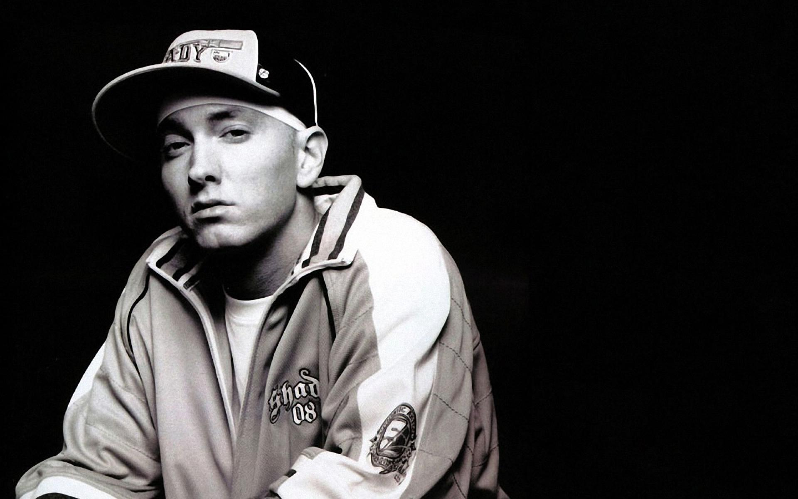

Marshall Bruce Mathers III
THE KING OF HIP-HOP !

Eminem (real name Marshall Bruce Mathers III) is an American rapper, music producer, and composer. One of the best-selling music artists in the world, the winner of fifteen Grammy Awards and an Oscar for the best soundtrack (the movie "8 Mile" in which he played the main role).
Awards and Achievement
- In 2001, the popular rapper was presented the 'Academy Award' in the 'Best Original Song' category for 'Lose Yourself', from the movie '8 Mile'. The award was the first ever to have been presented to a rap artiste.
- This exceptional rap artiste was declared the ‘Emcee of the Year’ by popular website ‘HipHopDX’ in 2010, while ‘MTV’ named him the ‘Hottest MC.
- Three years later, in 2013, the rapper won the title of 'YouTube Music Awards Artist of the Year', which was being presented for the first time. The same year, he was named the 'Global Icon' at the 'MTV EMA Music Awards'.
- The following year, his 'The Marshall Mathers LP 2' won a 'Grammy' for the 'Best Rap Album', while the song 'The Monster', featuring Rihanna, bagged the award in the 'Best Rap/Sung Collaboration' category.
- This artist has won the ‘Grammy’ for almost all his albums, including 'The Slim Shady LP', 'The Marshall Mathers LP', 'The Eminem Show', 'Relapse' and 'Recovery’, receiving the honour fifteen times.